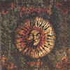
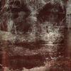
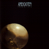
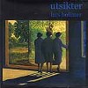
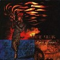
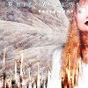

strange music page
progressive? * * * northern
#えーと北欧のプログレです。イメージ通り綺麗な感じのが多いですね。
なんつっても、アネクドテンの1枚目がスゴイ印象でした。
あとは、サムラ関係はちょっと別格かな？余り聴いてないけど。
|
- Isildurs Bane
- Anglagard
- Anekdoten
- Par Lindh Project
- Samla Mammas Manna
- Lars Hollmer
- FEM SOKER EN SKATT
- White Willow
|
#Isildurs Baneの１枚目のアルバムに81年頃の録音の"Sagan Om Ringen"を追加したアルバム。キャメルとかに近い甘い曲想ですが、北欧らしく透明感のある音になっています。I.Baneはやっぱこの頃の方が好きっぽいです。
Sagan Om Den Irlandska Algen
- Overtyr
- Saga Eller Verklighet
- Ove P.
- Sex Minuter
- En Vilja Att Leva
- Evighetens Visdom
- Marlboro Blues
- Fredrik
Sagan Om Ringen
- Overtyr
- Vandring
- Gamla Skogen
- Tom Bombadill
- Vidstige
- De Svarta Ryttarna
- Vattnadal
- Moria
- Sallskapets Upplosning
- Ringarnas Harskare I
- Ringarnas Harskare II
- Initiation
- L'Oejet
- L'Interprete
- 33 Ans
- Le Cicerone
- Le Vieillard
- Kjell Severinsson (drums,percussions)
- Fredrik Janacek (bass,guitars)
- Mats Johansson (keyboards)
- Bengt Johansson (percussions,congas)
- Jan Severinsson (keyboards)
- Jan Schaffer (guitars)
- Tommy Nilsson (guitars)
- Bjorn Jison Lindh (flute)
- Martin Jonsson (voice)
- Carl Rassell (violin)
- Jacob de Verdier (violin)
- Jan Svensson (viola)
- Peter Shoning (cello)
- Allan Hansen (string bass)
- Krister Olssen (flute)
- Christer Agardson (oboe,cor anglais)
- Gunnar Thorngvist (clarinet)
- Per Pettersson (french horn)
- Kitty Langmean (french horn)
- Dan Goransson (bassoon)

- Jordrok
- Vandringar i vilsenhet
- Ifran klarhet till klarhet
- Kung Bore
- Mattias Olsson (drums,percussions)
- Anna Holmgren (flute)
- Tord Lindman (guitars)
- Johan Hogberg (bass,mellotron)
- Tomas Jonson (mellotron,hammond organ,clavinet,piano)
- Jonas Engdegard (guitars)
Mellotronen: MELLO-004

- Prolog
- Hostejd
- Rosten
- Skogsranden
- Sista somrar
- Saknadens fullhet
- Mattias Olsson (trummor,cymbaleroch,slagverk)
- Johan Hogberg (basar)
- Thomas Johnson (hammondorgel,mellotron,keyboards)
- Jonas Engdegard (gitarrer)
- Tord Lindman (gitarrer)
- Anna Holmgren (tvarflojt)
- Asa Eklund (rost)
- Martin Olofsson (fiol)
- Karin Hansson (altfiol)
- Jan C.Norlander (cello)
HYB-CD-010 (1995)
#このアルバムは相当ハマリました。後期クリムゾンに感じたようなエネルギーの塊みたいなモノが90年代の北欧のプログレから聴けるなんて思ってもみなかったので。なんとなく好きそうな感じだったので買ってみたんですけど、1曲目からクリムゾン全開です。
- Karelia
- The Old Man & The Sea
- Where Solitude Remains
- Toughts on Absense
- The Flow
- Longing
- Wheel
- Nicklas Berg (guitars,mellotron)
- Anna Sofi Dahlberg (cello,mellotron,vocals)
- Jan Erik Liljestrom (bass,vocals)
- Peter Nordin (drums,percussives)
- Per Wiberg (piano)
- Par Ekstrom (flugelhorn,cornet)
Vitra: Vitra-001
- Nucleus
- Harvest
- Book of Hours
- Pendulum Swing
- The Book
- Raft
- Rubankh
- Here
- This Far From The Sky
- In Freedom
- Peter Nordins (percussives)
- Jan Erik Liljestrom (bass,vocie)
- Nicklas Berg (guitars,rhodes,clevinet,pumporgan,mellotron,voice)
- Anna Sofi Dahlberg (cello,mellotron,voice)
- Helena Kallander (violin)
- Tommy Andersson (rhodes on 2.)
#店頭で見かけて、思わず買っちゃいました。ちょっとはやまったかな(今月金ないのに)Anekdotenの3枚目。なんだか1枚目聴いた時の様なインパクトは薄れてきたような気もします。
でもやっぱ最近のプログレらしいプログレの中ではかなり良いです、歪んだベースがかっちょイイです。聴いたこと無い人にはクリムゾンでマグマで暗黒ですとか言っておけばイイのかな？(1999.11.12)

- from within
- kiss of life
- groundbound
- hole
- slow fire
- firefly
- the sun sbsolute
- for someone
- Jan Erik Liljestrom (bass,vocals)
- Nicklas Berg (guitars,mellotron,wrulitzer,vocals)
- Peter Nordins (percussions,vibrapones)
- Anna Sofi Dahlberg (mellotron,piano,rhodes,cello,vocals)
- Simon Nordberg (hammond organ,piano)
Vitra: Vitra-003 (1999.11)
#AnglagardやAnekdotenとかで某紙で北欧系とか言って流行ってた頃になんだかスゴそーなその雑誌の記事を見て買ったモノです。シンフォニックとか言う言葉そのまんまの音でした、大仰な音のわりには全然ダメでした、後期のELPを更に大仰にしたような印象しか残って無いです。というか売っちゃったのでもうどんなのかわからないですけど、とりあえずダメだったのは覚えてます。プログレのためのプログレみたいな。
- Dresden Lamentation
- The Iconoclast
- Green Meadow Lands
- The Cathedral
- Gunnlev's Round
- Night on Bare Mountain (including the Black Stone)
- Par Lindh (keyboards,synthesizers,mellotron)
- Ralf Glasz (vocals)
- Mathias Jonsson (vocals)
- Magdalena Hagberg (vocals)
- Johan Hogberg (bass)
- Jonas Engdegard (guitars)
- Jocke Ramsell (guitars)
- Bjorn Johansson (guitars,bassoon)
- Mattias Olsson (drums,percussions)
- Hakan Ljung (lute)
- Anna Holmgren (flute)
- Lovisa Stenberg (harp)
- Five Single Combats
- Ventilation Calculation
- The Forge
- The Thrall
- The Panting Short Story
- Pappa (with right of veto)
- The Farmhand
- Kernel in Short and Long Castling
- Lars Hollmer (keyboards,accordion,voice)
- Eino Haapala (guitars,voice)
- Lars Krantz (bass,voice)
- Vilgot Hansson (drums,percussions)
- Hans Bruniusson (drums,percussions)
silence records: SRSCD-3612 (original release 1980)
#サムラの、1999年の復活作。最近の復活モノってトホホなのが多いんですけど、この人達は別でした。すごい技術の演奏力ですごいマヌケで愛らしい音楽。
舌を噛んだ英語のナレーションからはじまって、いきなり変拍子リフです。なんだかアルバム通して驚異的な悪ふざけみたいなアルバムです。しかも笑っちゃうくらいのプログレ。
Lars Hollmerが来日するってんで、ちょっとお勉強しようと思って買ってみました。こんなテンション高いアルバムと思ってなかったです。ちょっと舐めてたかな？(2000.10.21)
- Stamma Lite
- Lyckliga Titanic
- Oh Sa Masalana Jamfort Med Alman River
- Forsta Ikarien
- Reptil Garna
- Satori
- Begetariskt Impro, Svar Direkt
- Frestelses Cafe
- Tung Krupa Tejpraga Tra La La
- Andra Ikarien
- Aven Oss Far Tiden Aldras Spasmodskij Engelbert Humperdinck Blues
- Hatman
- Tredje Ikarien
- OQ
- Coste Apetrea (guitars,bouzouki,veena,voice)
- Hans Bruniusson (drums,percussions,marimba,voice)
- Lars Hollmer (keyboards,accordion,melodica,voice)
- Lars Krantz (bass,voice)
Amigo Musik: AMCD-884 (1999)
#
サムラの来日記念盤らしいです。ジャケットの裏、メンバーの母ちゃんの写真が有りました。吉田達也母の顔が吉田達也に似すぎで大笑い。
中身は2002.5.16のスウェーデン/ウプサラでの吉田入りサムラのライヴと2001.11.5のL.Hollmer+C.Apetrea+RUINSのセッションを収録したもの。まぁオフィシャルブートみたいな感じです。
ライヴ収録ってのも有るんですが、コレを聴くと吉田達也ってやっぱり特徴有るドラマーなんだなと再認識します。(2002.9.29)
- introduction
- frestelsens cafe
- ooaajjii/ohdadaididadaidi
- langt ner l ett kaninhal
- dear mamma pt.1
- ingenting
- forsta ikarien
- dear mamma pt.2
- andra ikarien
- mjolk
- tredje ikarien
- fredmans session 1
- fredmans session 2
track 1-11.
live at Crossroad,Uppsala,Sweden
May 16th 2002
track 12.13
live at Fredmans,Uppsala,Sweden
November 5th 2001
L.Hollmer/C.Apetrea/Ruins
- Lars Hollmer (keyboards,voice)
- Coste Apetrea (guitars,voice)
- Lars Krantz (bass,voice on 1-11.)
- 吉田達也 (drums,voice)
- 佐々木恒 (bass,voice on 12.13.)
KRAX: KRAX-14
TUTINOKO LABEL: TUTI-0004 (2002.9)
#Sammla Mammas Manna（もうSOLAの方が馴染みがイイのかな？）のLars Hollmerの2000年のCD。初来日の時もライヴハウスで売ってましたけど、今更買ってきました。
可愛らしい（でもアホっぽい）曲も有れば、室内楽風味の曲も有って楽しいです。しっとりとしたメロディをきちんと聴かせる曲構成。でもトラッドっぽい流麗な曲でも変拍子ばっかしだったり。
一番好きなのは「In Limbo」ってピアノ曲。迷路の中みたいな雰囲気な短い曲。(2003.4.6)

- Augustins tema
- Nat
- Drums. mm...
- Denglad
- Skum
- Ambler
- Ladereld
- Nu racker det
- Lelle Katta
- Choleric in Geneva
- Voilapuk
- Lat Minut
- Sudaf
- Dron
- Lars Hollmer (accordion,melodica,piano,keyboards,harmonium,voices,fake tuba,percussion)
- Michel Berckmans (basson,oboe,english horn,recorder,percussion,voice)
- Santiago Jimenez (violin,mandolin,cajon)
- Wolfgang Salomon (bass,guitar)
- Coste Apetrea (six stringed banjo)
- Matti Andersson (flute)
- Kalle Eriksson (trumpet)
KRAX: KRAX-11 (2000)
- Intro
- 8:e Rumanen
- Armeniska Valsen
- Haxan
- 3:e Rumanen
- Klaga
- Klacken
- L 'Heritage
- 4:e Rumanen
- Ostvindar
- Pygme
- "Makedoniern"
- Kotojam
- 5:e Rumanen
- Sang Fran Mora
- Svang Battre
- Dammsugarblues
- Bogdan Dansar
- Dromsk Rost
- Kalle Eriksson (trumpet,flute,congas,percussions)
- Olof Hellborg (drums)
- Lars Hollmer (keyboards,accordion,melodica,voice,drums,percussions)
- Olle Sundin (keyboards,accordion,percussions)
- Ulf Wallander (saxes,clarinet,percussioons)
KRAX: KRAX-9 (1995)
#確かマーキーから国内盤が出てたヤツです。北欧の神秘的な感じのフォークっぽいアルバムです、レーベルはアメリカですけど。
個人的には綺麗な女性ボーカルと陰りの有るメロディーラインとで、かなりお気に入りです。なんだか薄明かりの中から聞こえてくるような音楽です。zabadakとかそっち系のファンの方にもオススメかも。

- Snoofall
- Lord of Night
- Song
- Ingenting
- The Withering of The Boughs
- Lines on An Autumnal Evening
- Now in These Fairylands
- Piletreet
- Till He Arrives
- Cryptomenysis
- Signs
- John Dee's Lament
- Jan Tariq Rahman (mellotron,clavinet,guitars,synthesizers)
- Sara Trondal (vocals)
- Eldrid Johansen (vocals)
- Trill Mohn (violin)(classical guitar on 11.)
- Andun Kjus (flute,whistle)
- Alexander Engebretsen (bass)
- Jacob C.Holm-Lupo (guitars)
- Tov Ramstad (cello on 6.)
- Carl Michal Eide (drums,percussions on 10.)
- Steinar Haugerud (double bass on 6.)
- Eivind Opsvik (fretless bass on 4.)
- Erlend M.Saeverud (acoustic 12string on 7.)
- Susanna Calvert (acoustic guitars on 5.)
- Kjell Viig (counter tenor solo on 3.)
- Henning Eidem (drums,percussions on 5.)
LASER'S EDGE: LE-1021 (1995)
#ノルウェーのプログレバンド、前作が結構気に入ってたので買ってみました。コレは3枚目のアルバムになるんですけど、メンバーはほとんど入れ替わっています。詳しくは
オフィシャルHPへ
トラッド/フォークを基調とした耽美でゴシックな世界です、同じ北欧のAnglagardとかとも似た雰囲気、他だったらSPIROGYLA(フュージョンじゃないヤツ)とかIONAとかみたいな。
長めの曲とかの後半はいかにもプログレらしい無理の有る曲展開になってしますんで、そーでない短めの曲とかの方が良い感じかな？1曲1曲もーちょい短くしてくれたら良かったんですけど。
たぶんプログレ者以外には知られてないCDだと思いますけど、ALL ABOUT EVEとかDAMON AND NAOMIとかにも通じるようなアコースティックな雰囲気も持ってたりもしてます。4曲目のちょっとポップな感覚なんて結構好きです。(2001.6.6.)

- anamnesis
- paper moon
- the crucible
- the last rose of summer
- gnostalgia
- the reach
- Brynjar Dambo (keyboards,glockenspiel)
- Aage Moltke Schou (drums,percussions,glockenspiel)
- Sylvia Erichsen (vocals)
- Johannes Saeboe (bass)
- Jacob Holm-lupo (guitars,vocals,keyboards,bass)
- Ketil Vestrum Einarsen (flute,recorder,melocdica,keyboards)
- Simen E.Haugberg (oboe on 1.3.5.)
- Oystein Vesaas (vocals o 1.)
LASER'S EDGE: LE-1034 (2000)